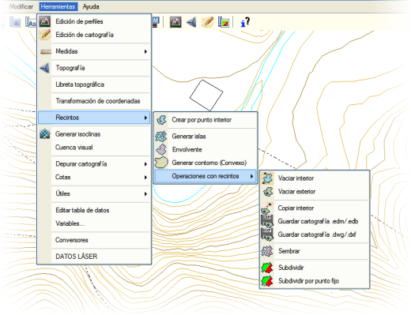
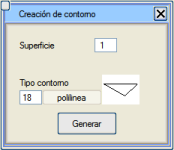
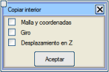

| |
|
KAPALI ALANLAR
|
|
Genel Bilgiler Kapalı alanların kullanımı, düzenleme işlemlerini yalnızca kapalı bir çizginin içine (veya dışına) sınırlı tutmanın yanı sıra, bu tür bir nesne olmadan gerçekleştirilmesi imkansız olan bir dizi başka seçeneğe de olanak tanır. Bir çizgi, köşe noktaları (çizgiler araç çubuğundaki  ve ve  butonları) ardışık olarak gezildiğinde ve sonuncuya ulaşıldığında otomatik olarak ilkine atladığında, yani döngüsel olarak gezilebildiğinde kapalı olacaktır. butonları) ardışık olarak gezildiğinde ve sonuncuya ulaşıldığında otomatik olarak ilkine atladığında, yani döngüsel olarak gezilebildiğinde kapalı olacaktır.Kapalı alanlarla ilgili işlemler, resimde gösterildiği gibi Araçlar → Kapalı Alanlar menüsünde gruplandırılmıştır: 
Kapalı Alan Oluşturma Kapalı alanlar, çeşitli şekillerde oluşturulabilen kapalı çizgilerdir:
Bu, örneğin bir kapalı alanın tamamını, içindeki kapalı alanlar hariç, doldurmak veya boşaltmak için kullanışlıdır.
Adacıklı bir kapalı alan oluşturmak için, dış kapalı çizgiyi ve iç kapalı çizgileri belirtmek yeterlidir. O andan itibaren, dış ve iç kapalı alanlar topluluğu, döngüsel olarak gezildiğinde görülebileceği gibi, tek bir kapalı çizgi oluşturur.
Kullanıcı, oluşturulan dış sınır kapalı alanının her köşe noktasına belirtilen tipte bir sembol oluşturma ve aynı zamanda istenen metin stili ve boyutu ile noktaların numaralandırmasını etiketleme seçeneğine sahiptir. İkinci durumda, program etiketlenecek ilk ve ikinci köşe noktasını sorar, böylece etiketleme sırası belirlenir. Liste Oluştur seçeneği etkinleştirilirse, dış sınır kapalı alanının her bir köşe noktasının koordinatlarını içeren bir liste gösterilir.
Bu seçenek, örneğin bir projeyi oluşturan farklı eksenlerin tüm kamulaştırma sınırları ile bir dış sınır kapalı alanı oluşturmak için çok kullanışlıdır.

Kapalı Alan İşlemleri Program, bu menüden ayrıca aşağıdaki kapalı alan işlemlerine de olanak tanır:
Kesim noktalarını, kapalı alanı tanımlayan kapalı çizgiye eklemek mümkündür. Bir iç kapalı alanı boşaltma durumunda, program ayrıca seçilen çizgi tipindeki tüm kapalı alanları otomatik olarak boşaltma imkanı da sunar. Bu durumda, seçilen tipteki çizgiler diğer kapalı alanların boşaltılmasından etkilenmez (yani, kapalı alanlar ortak bölgelere sahip olabilir).
Kopya kapalı alanı, kopyalanan verilerin hedefini ve yönelimini seçmek için döndürülebilir ve taşınabilir. İsteğe bağlı olarak, hedefte verilerin orijinine karşılık gelen bir koordinat gridi oluşturulabilir.
Kopyalanan nesneler kot olarak da ötelenir. Hedef, klavyeden girilebilir veya başlangıç ve hedef noktalarını belirtmek için yakalama modları kullanılabilir. İkinci durumda, belirtilen noktalar arasındaki kot farkı kopyalanan nesnelere eklenir.
Seçenek seçildikten sonra, kullanıcı fare ile seçilen kapalı alanlar serisini belirtir ve ardından, programın sıra numarası ve .edm/.edb uzantısını ekleyerek değiştirdiği dosyalar için bir temel ad belirtir ve dosyaları sırayla yazar. Eğer seçilen temel ada sahip dosyalar zaten varsa, program bu konuda uyarır.
Bu seçenek, kapalı bir kapalı alan ve onun konturundan iki nokta seçmenizi ister; bunlarla bir ön bölme yapar ve iki alt kapalı alanın alanlarını gösterir. Ardından program, bunlardan biri için nihai alanı ve o alanı aradığı alt kapalı alanın içine fare ile tıklamanızı ister. Ön bölme ile, programın olası bir çözüm aramak için kendisine paralel olarak kaydırdığı bir doğru tanımlanır.
|
 seçeneği ile ve kapatılacak çizgiye çift tıklayarak.
seçeneği ile ve kapatılacak çizgiye çift tıklayarak.